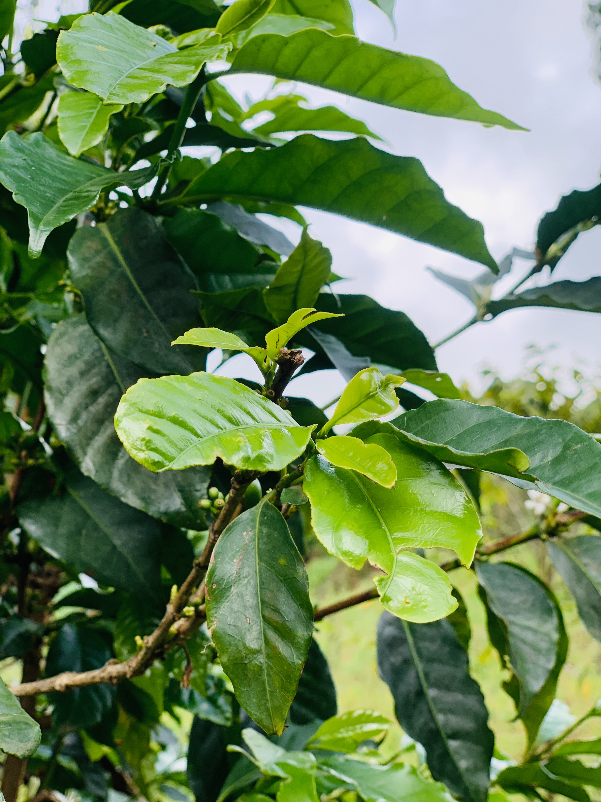
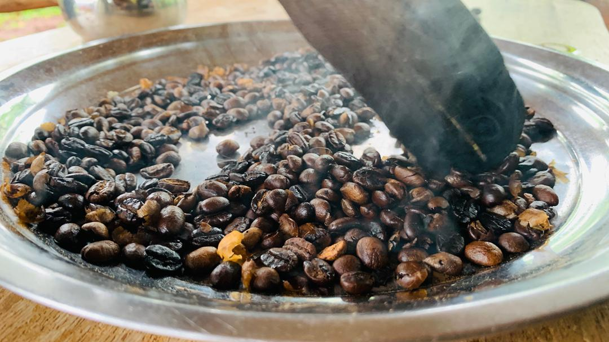
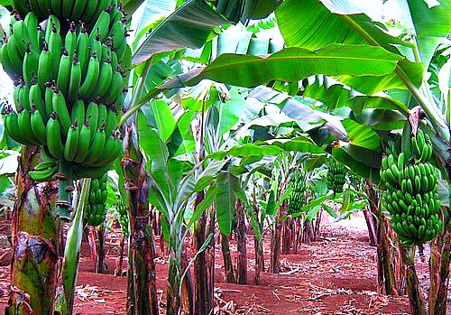
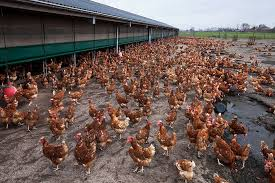
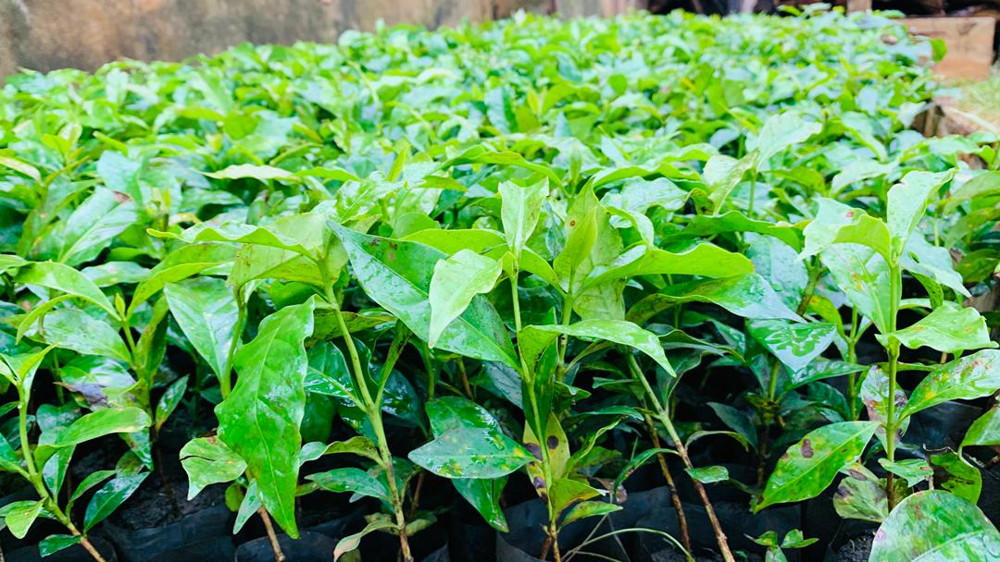

Maya Farm is an integrated, certified-organic agricultural enterprise delivering premium coffee, fresh produce, and sustainable livestock from the fertile soils of Wakiso.


Founded in the rich volcanic soils of Wakiso District, Maya Farm has grown from a small family holding into one of Uganda's most progressive integrated organic farms. We combine traditional Ugandan farming wisdom with modern agribusiness practices.
Our farm covers over 120 acres of cultivated land, producing specialty arabica coffee, premium matooke bananas, free-range poultry, and sustainable piggery — all managed under certified organic principles.
We are open to strategic partnerships, investor collaborations, and agri-tourism engagements that align with our mission of building a resilient, profitable, and earth-conscious enterprise.
All produce grown without synthetic inputs
Structured for joint ventures and partnerships
200+ local families in our supply chain
Direct links to European and Asian markets
From bean to cup, field to market — Maya Farm runs an integrated ecosystem of agricultural enterprises, each contributing to a circular, profitable, and sustainable farming model.


Minutes from Kampala — Uganda's commercial capital — giving us unmatched logistics access for domestic and export markets.
Six integrated enterprises spread risk and create multiple income streams, ensuring stable returns across all seasons.
Established buyer relationships with European specialty coffee roasters, regional supermarket chains and exporters.
Infrastructure, knowledge, and land ready for expansion under a joint-venture or equity partnership framework.
Operating under organic certification with transparent financial records and ESG reporting ready for investors.
Growing visitor economy in Uganda creates opportunity for eco-lodge, farm-tour, and coffee-experience offerings.

"The earth does not belong to us — we belong to the earth. At Maya Farm, every seed we plant is a promise to the next generation."Maya Farm Founding Charter, Wakiso 2020
Whether you are an investor, buyer, agri-tourism operator, or just curious — we welcome every conversation that begins with the soil.
Get In Touch